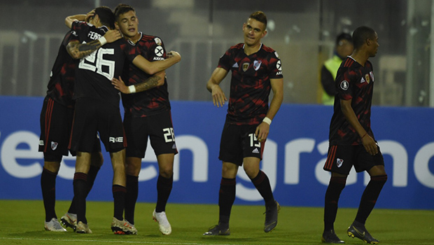

El equipo de Marcelo Gallardo venció 2-0 a Palestino, con goles de Pinola y Nacho Fernández, y aseguró su pase a la próxima instancia de la Copa CONMEBOL Libertadores cuando resta una fecha por jugarse.
River Plate se hizo dueño del partido en el inicio del partido y comenzó a llevar peligro al arco de José González, aunque le costaba ser profundo. Muestra de ello fueron las situaciones que generaron: remate suave de Nicolás De La Cruz que tapó el arquero y otro similar de Enzo Pérez, que también fue resuelto sin problemas por González.
Luego, la dupla de ataque invirtió roles en dos jugadas parecidas. Primero, Matías Suárez se la bajó a Lucas Pratto, pero el delantero no logró definir con comodidad. Luego, al revés: el Oso se la cedió al 7 y el cordobés no logró rematar con precisión. Suárez fue reemplazado por Rafael Borré en la jugada siguiente.
En la primera del conjunto local, Franco Armani respondió de manera excelente a un cabezazo de Lucas Passerini, aunque el delantero estaba en posición adelantada. El merecido gol de River llegó luego de un buen tiro libre de Nacho Fernández y un cabezazo tremendo de Javier Pinola, quien llevó la cinta de capitán en Chile.
El Millonario pudo haber marcado el segundo, con un buen zurdazo cruzado de Fabrizio Angileri que Borré no llegó a puntear en el área y un cabezazo muy claro de Lucas Martínez Quarta, quien les ganó a todo de arriba tras un tiro de esquina desde la derecha y se fue muy cerca del palo izquierdo de González.
En el segundo tiempo, Palestino tuvo la primera con un remate muy peligroso de Luis Jiménez que pasó cerca del palo derecho de Armani. Sin embargo, el Millonario nunca se desordenó y encontró el segundo tras un pase de Exequiel Palacios, un toque sutil de De La Cruz y un atento Nacho Fernández, quien apuró al arquero, forzó el error, y marcó el 2-0 con el arco libre.
El local volvió a contar con una jugada clara en los pies de Passerini, quien estrelló un remate en el travesaño. Luego, River fue en busca del tercero: De La Cruz se la bajó a Pratto y delantero remató alto de derecha y una más, tras una gran jugada colectiva, que no llegó a buen destino porque le interceptaron el centro a Palacios.
Cerca del final, De La Cruz dominó una buena asistencia de Palacios, pero lo trabaron justo cuando remató de frente al arco. Borré también tuvo la suya, pero definió alto. Así, River sumó tres puntos en Chile y se clasificó a octavos de final de la Libertadores. Ahora, cerrará la fase de grupos ante Inter de Porto Alegre, en el Estadio Monumental, el 7 de mayo.
SÍNTESIS
PALESTINO: José González; Alejandro González, Julián Fernández, Lucas Passerini,
Luis Jiménez (C), César Cortés, Luis Del Pino, Fabián Ahumada, Brayan Vejar, Guillermo Soto,
Carlos Farías. DT: Ivo Basay.
Suplentes: Fabián Cerda, Sebastián Silva, Nicolás Díaz, Diego Rosende,
Cristóbal Jorquera, Santiago Lizana, Enzo Guerrero, Ignacio Ayala, Roberto Gutiérrez, Renato
Tarifeño, Juan Murillo e Ignacio Herrera.
Cambios: Guerrero por Cortés, Jorquera por Ahumada.
RIVER PLATE: Franco Armani; Gonzalo Montiel, Lucas Martínez Quarta, Javier
Pinola (C), Fabrizio Angileri; Bruno Zuculini; Enzo Pérez, Ignacio Fernández; Nicolás De La
Cruz; Matías Suárez y Lucas Pratto. DT: Marcelo Gallardo.
Suplentes: Germán Lux, Robert Rojas, Camilo Mayada, Leonardo Ponzio, Exequiel
Palacios, Cristian Ferreira, Rafael Borré y Julián Álvarez.
Cambios: Borré por Suárez, Palacios por Zuculini, Ponzio por Pérez.
Goles: Pinola, Fernández (RP).
Amonestados: Fernández, A. González, Jiménez (P); Zuculini, Armani, Montiel (RP).
Expulsados: Fernández (P); Borré (RP).
Árbitro: Andrés Rojas (Colombia).
Asistentes: Wilmar Navarro y Alexander Guzmán (Colombia).
Cuarto árbitro: Carlos Herrera (Colombia).
· 28/04/2019
Copa de la Superliga: River empató en la ida
ante Aldosivi
· 26/04/2019
Los convocados para el debut en la Copa de la
Superliga
· 17/04/2019
Copa Argentina: River goleó en Salta y dio el
primer paso
· 15/04/2019
Los convocados para el debut en la Copa Argentina en
Salta